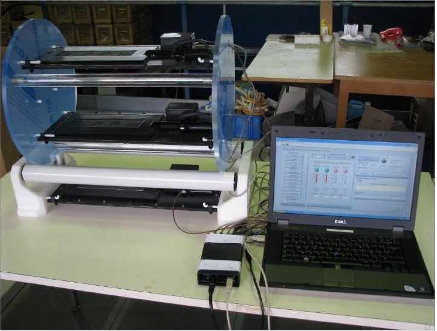
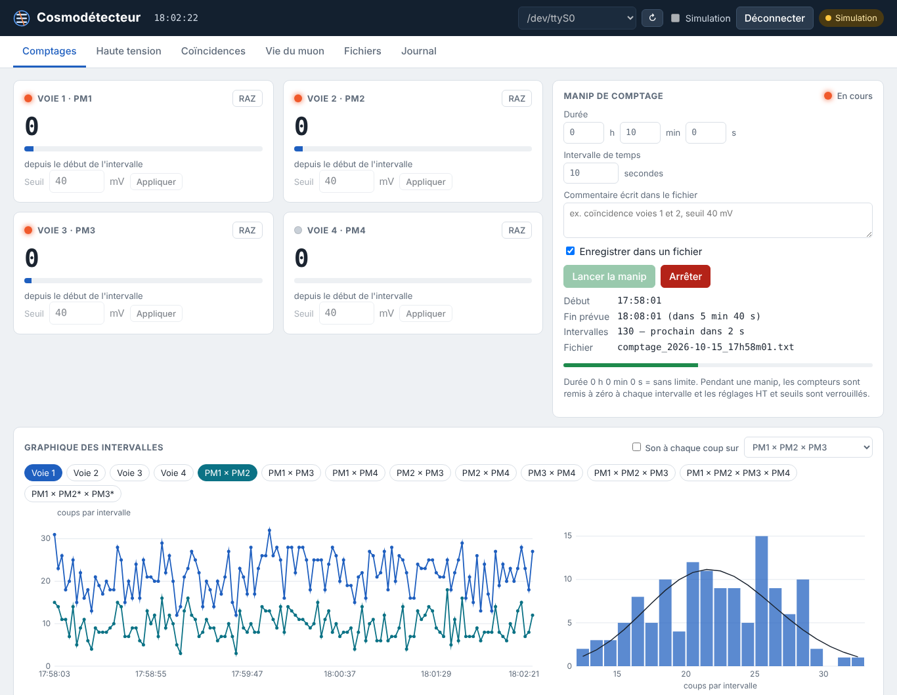
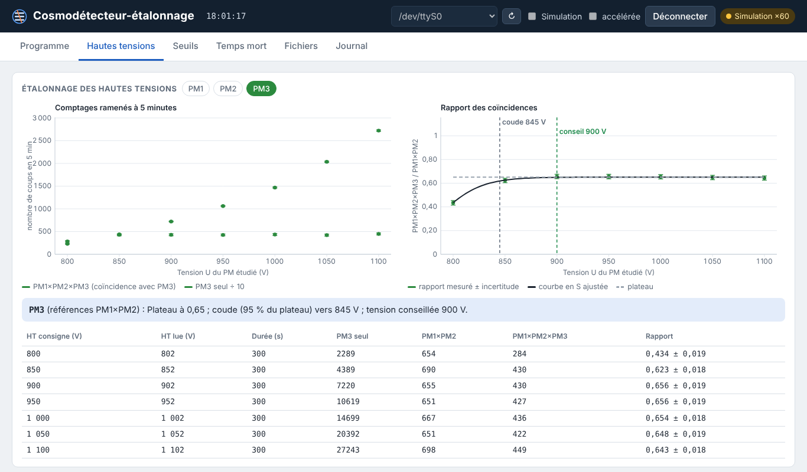

Le grand frère du MicroCosmos
Le cosmodétecteur est un détecteur de muons cosmiques prêté aux lycées par Sciences à l’École, dans le cadre du plan « Cosmos à l’École ». Cette « roue cosmique » a été conçue au CPPM (Centre de physique des particules de Marseille). Le matériel reste la propriété de l’Observatoire de Paris, qui héberge le dispositif Sciences à l’École ; il est prêté pour trois ans, renouvelables, aux établissements retenus après un appel à candidatures.
C’est lui qui a servi d’inspiration au MicroCosmos : même principe de coïncidence entre plusieurs détecteurs empilés, mêmes expériences de base, mais avec des détecteurs professionnels bien plus sensibles. Le MicroCosmos en est une version modeste et bon marché, qu’on peut multiplier dans une salle de TP.
Le cosmodétecteur a aussi servi de référence pour valider les mesures du MicroCosmos : le flux de muons mesuré au lycée avec le cosmodétecteur (135 m⁻² s⁻¹) est cohérent avec celui trouvé avec les tubes Geiger (146 m⁻² s⁻¹).

Comment il détecte les muons
Les trois raquettes sont fixées sur une roue graduée qui permet de les incliner. Chaque raquette est suivie de la même chaîne de détection :
Scintillateur
Une « raquette » de plastique scintillant (150 × 285 × 10 mm) émet un éclair de lumière au passage d’un muon.
Photomultiplicateur
Il convertit cette lumière en impulsion électrique et l’amplifie environ un million de fois.
Discriminateur
Il ignore les impulsions sous un seuil réglable et transforme les autres en signaux carrés.
Coïncidence
Un « ET » logique ne garde que les signaux simultanés de plusieurs raquettes : ce sont les muons.
Pourquoi la coïncidence ? Chaque photomultiplicateur produit de nombreuses impulsions parasites (bruit d’obscurité), bien plus fréquentes que les muons. Un seul détecteur ne peut donc pas les distinguer. Un muon, lui, traverse les raquettes empilées presque à la vitesse de la lumière : il les déclenche toutes en quelques nanosecondes.
Les coïncidences fortuites. Avec 100 coups par seconde sur chaque voie et une fenêtre de 100 ns, on attend N = n₁ × n₂ × T = 100 × 100 × 10⁻⁷ = 10⁻³ coïncidence fortuite par seconde : négligeable devant le millier de muons comptés pendant le même temps. C’est le même calcul que pour le MicroCosmos, avec une fenêtre 10 000 fois plus courte.
Les expériences
Distribution angulaire
En inclinant la roue, on mesure les coïncidences en fonction de l’angle au zénith, 5 minutes par angle (environ 2 h en tout). La courbe suit une loi proche de a cos²θ + b : les muons arrivant de l’horizon traversent plus d’atmosphère.
Provenance des muons
Le module Cerenkov, un cylindre de plexiglas couplé à un photomultiplicateur, est sensible au sens de traversée des muons. En le tournant vers le haut puis vers le bas, on montre que les muons viennent du ciel.
Temps de vie du muon
Dans le module temps de vie, certains muons s’arrêtent puis se désintègrent : on mesure le temps entre les deux signaux. L’histogramme suit une exponentielle de constante τ ≈ 2,2 µs. C’est ce que le MicroCosmos ne peut pas faire.
Avant les mesures, il faut régler l’appareil : tension des photomultiplicateurs (plateau d’efficacité), seuils de discrimination (plateau des coïncidences) et temps mort de l’acquisition. Tout est détaillé dans le livret pédagogique.
Cosmodétecteur et MicroCosmos
| Cosmodétecteur | MicroCosmos | |
|---|---|---|
| Détecteurs | 3 raquettes de scintillateur + photomultiplicateurs, et deux modules (temps de vie, Cerenkov) | 2 tubes Geiger-Müller du commerce (7 cm² chacun) |
| Électronique | boîtier dédié : hautes tensions et seuils réglables, 4 voies, 9 coïncidences | Arduino Uno et shield, sans soudure |
| Fenêtre de coïncidence | 100 ns | 1 ms |
| Taux de muons | environ 1 par seconde | environ 1 par minute |
| Expériences | distribution angulaire, provenance des muons, temps de vie du muon | distribution angulaire, dilatation du temps en altitude, radioactivité |
| Accès | prêt de Sciences à l’École, sur candidature, pour 3 ans renouvelables | environ 150 € de matériel : on peut en équiper une classe |
Les deux appareils se complètent : le cosmodétecteur pour des mesures précises et le temps de vie du muon, le MicroCosmos pour faire manipuler toute une classe, l’emmener en altitude ou étudier la radioactivité.
Un nouveau logiciel pour le cosmodétecteur
Le cosmodétecteur était piloté par le logiciel LabVIEW « Roue Cosmique » (CPPM, 2011), qui ne fonctionne que sous Windows. Nous l’avons réécrit en Python, avec une interface dans le navigateur, sur le modèle du logiciel Microcosmos. Il fonctionne sous Linux, Windows et macOS, propose un mode simulation pour essayer sans détecteur, et enregistre les mesures au même format que l’ancien logiciel : vos feuilles de calcul restent utilisables.


Cosmodétecteur
Réglage des hautes tensions et des seuils des photomultiplicateurs, comptages de chaque voie, les 9 coïncidences, mesure du temps de vie du muon avec ajustement exponentiel, graphiques et histogrammes comparés à la loi de Poisson.
Notice : Notice_Cosmodetecteur.pdf · s’ouvre sur http://localhost:8000


Cosmodétecteur-étalonnage
Logiciel compagnon qui réalise seul les trois étalonnages du livret (hautes tensions, seuils, temps mort), par exemple pendant une nuit, puis conseille les réglages. Les hautes tensions ne dépassent jamais 1350 V.
Mode d’emploi dans le fichier LISEZMOI de l’archive · s’ouvre sur http://localhost:8003
Installation. Sous Linux Mint, Ubuntu ou Debian, double-cliquez sur le paquet .deb puis
« Installer le paquet » : le logiciel apparaît dans le menu et a directement accès au port série. Sinon, décompressez l’archive et lancez
lancer.sh (Linux) ou lancer.bat (Windows), comme pour le logiciel Microcosmos.
Les deux logiciels du cosmodétecteur utilisent le même port série : un seul peut être connecté au boîtier à la fois.
Adaptation du logiciel Roue Cosmique (Sciences à l’École, CPPM, Michel Jevaud et Marta Rodo Bordera, 2011) pour le cosmodétecteur (José Busto). Conception et direction du projet : Cédric Vanden Driessche (2026) ; développement du code : Claude (Anthropic), sous sa direction. Licence GNU GPL v3.